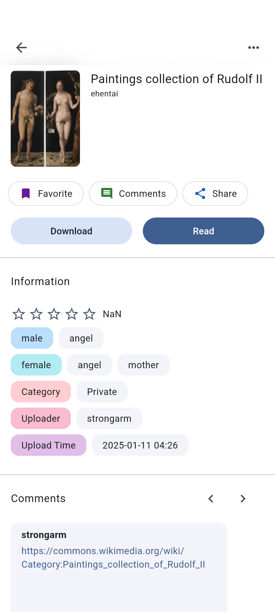

Venera 漫画阅读器用了半年才搞清楚的几个大坑
从格式兼容到漫画源安装、从本地库维护到换机恢复，盘点我踩过的那些让人抓狂又容易被忽略的操作陷阱。
半年前第一次接触 venera官网 介绍的这个软件，我以为就是个看漫画的小工具——打开、找源、开读，能有什么复杂的？结果断断续续踩了好几个坑，有的让我白白折腾半小时，有的差点把攒了大半年的本地库搞乱。这篇把我遇到的几个典型问题按真实经历捋一遍，用过的人可以对照自己有没有中招，刚上手的也能提前避开。
第一个坑：压缩包格式不是你想得那么宽泛
刚从 venera下载 装完的时候，手里有一批 RAR 格式的漫画包，兴致勃勃地往进导，结果一个都没成功。界面不报错也不提示，就是悄悄跳过了，让我以为文件坏了，又重新下了一遍。
症状：导入 RAR 或 PDF 文件时，应用静默忽略，导入列表里看不到任何新增，也没有任何错误提示。
原因：Venera 对压缩包格式的支持是硬编码的——只认 .cbz、.zip、.cb7、.7z 这四种。网上很多老教程和论坛帖子会说"支持常见格式"，但不同版本间实际支持的范围有出入，RAR 和 PDF 在当前版本里就是不支持。更隐蔽的是分卷压缩包（.z01、.z02 这种），即使是 zip 格式，分卷了也不认。
解法：导之前先用解压工具把 RAR 转成 zip，或者直接用在线转换工具批量处理。分卷包一定要先合并成一个完整文件再导入。这一步说起来简单，但我当时在"是不是文件损坏"和"是不是应用 bug"之间来回纠结了快半小时，才反应过来是格式问题。

第二个坑：本地库的失效条目越积越多，你根本没注意
Venera 的本地库有个机制——你手动删掉磁盘上的漫画文件，应用里的条目不会自动消失。我之前整理过一次磁盘，把一些不想留的压缩包移到了别的文件夹，结果打开本地库还是能看到那些条目，点进去读的时候才发现文件不存在，体验贼糟。
症状：本地页面里存在一些漫画条目，点进去提示无法加载内容，或者阅读时直接黑屏跳出。
原因：本地库的定位是"文件层面的存在性管理"，应用只记录"这里曾经有过什么"，不会定时校验磁盘上文件的真实状态。这和收藏分组是两套独立系统——删收藏不删文件，删本地文件也不自动同步条目。
解法：定期清理一次失效条目。本地库页面顶部一般有清理入口，跑一遍就能把账实不符的条目筛出来。我现在养成习惯，每次整理完磁盘之后就去点一下清理按钮，也就几秒钟的事。如果本地库条目特别多（上百本那种），建议在排序里用"失效优先"把有问题的堆到一起，集中处理。
第三个坑：漫画源脚本——别什么都往里面塞
Venera 的扩展体系很大一个特色就是"漫画源脚本"——装一个 .js 脚本文件，就能解锁新的漫画资源源。但自由度大了，坑也来了。我在某个论坛看到有人分享了一个"聚合 50 个源"的大包，顺手就装了，结果打开之后发现搜索结果里混了一堆来源不明的源，有的还弹窗要授权。
症状：装了来源可疑的脚本后，源列表里出现大量陌生条目，或者搜索时跳转异常、加载缓慢。
原因：漫画源脚本本质上就是在应用沙箱里运行的第三方 JavaScript 代码。理论上有沙箱隔离，但来路不明的脚本可能有各种奇奇怪怪的行为——有的偷偷请求外部接口，有的强制弹窗引导，还有的会影响其他已装源的稳定性。官方维护的源列表是经过审核的，但论坛分享、私人分享的脚本就没有这层保障了。
解法：只从两个可信入口装源——一是应用内置的"漫画源列表"，那是官方维护的仓库；二是自己确认来源可信的朋友直接分享的脚本文件。装完之后如果某个源行为异常，及时进源管理页停掉或者删掉。管理入口在主界面的漫画源管理里，每个源都可以独立停用或卸载，不用怕装错了救不回来。
第四个坑：换机搬数据，别只搬漫画文件夹
上个月换手机，我把旧设备的漫画文件夹完整拷贝过去了，结果打开 Venera 一看——本地库是空的，下载记录也一条都没了。当时以为拷贝过程丢了文件，又折腾重新下了好几本，后来才发现根本不是文件的问题。
症状：换机后漫画文件夹在，Venera 本地库和下载记录全部丢失，需要重新导入。
原因：下载记录和本地库的索引信息存在应用自己的数据库里，和漫画文件是两套东西。你只搬了文件，数据库没搬，应用自然认不出这些是"自己下载过的"。下载完成的漫画虽然归入本地管理，但"这条记录存在过"这个事实是存在应用数据库里的，不是存在文件上。
解法：按 venera文档 里的指引，换机时要么整包迁移——用 WebDAV 同步功能把收藏、阅读进度、下载记录全都同步过去，在新设备上登录同一个同步账号就能完整恢复；要么先在旧设备上把本地漫画导出备份，新设备上重新导入。如果文件特别多，重新导入虽然有点费时间，但至少能保住内容。
第五个坑：压缩包改名乱序了都不知道
有一次下了一个多章节的压缩包，解压之后图片文件名杂乱无章，比如 1.jpg、10.jpg、2.jpg 这种。我以为 Venera 会按创建时间或者其他方式排序，结果打开漫画看到的页序是乱的，第 10 页跑到第 2 页前面去了。
症状：多章节或多页漫画打开后页序错乱，不是按实际章节顺序呈现的。
原因：Venera 内部对压缩包内的图片只有一个排序规则——按文件名字符串排序。不是数字大小，不是创建时间，就是纯字符串的字典序。1.jpg 之后是 10.jpg 还是 2.jpg，完全看字符串比较结果。同理，文件夹形式的漫画导入也遵循这个规则。
解法：压缩包里的图片文件名必须做零填充——01.jpg、02.jpg、……10.jpg、11.jpg，这样字符串排序才和数字顺序一致。我现在下载新漫画包的第一件事就是打开解压工具检查一下文件命名，乱的话用批量重命名工具（比如 Bulk Rename Utility）一键改成规范格式，省得导进去之后一页页翻错。

防坑清单（3 条速查）
- 格式先过滤：RAR、PDF、分卷压缩包一律先转成 zip 或 7z 再导入，省得导完才发现白折腾
- 漫画源宁缺勿滥：只用内置漫画源列表的官方仓库，论坛脚本谨慎对待
- 定期清失效：本地库每次整理完磁盘就点一下清理按钮，别让僵尸条目越积越多
最后说一句
用了半年下来，Venera 其实相当省心——搜索聚合多源、下载队列管理、收藏分组这些核心功能都很顺。上面列的五个坑都是我自己踩出来的教训，有的是设计上的"硬规矩"，有的是没养成好习惯。这篇涉及的几个常见问题，我顺手整理了一份排查思路，在 GitHub、Gitee 和 GitCode 都有同步，国内访问哪家方便就去哪家看。知道这些之后，这软件其实相当省心。